Optimisation of integral
D'ou vient ce problème ?
Durant mon stage de fin d'étude, une intégrale relativement compliquée à calculer nous a posé problème dans l'équipe avec laquelle je travaillais, et mettait beaucoup trop de temps à s'éxecuter sur Matlab. Voici cette équation :
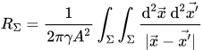
Cette équation représente physiquement la résistance dite de constriction. En effet, lorsque deux
surfaces métalliques sont en contact, elles ne se touchent que sur de toutes petites régions.
Pourquoi cela ?
Tout simplement, parce qu'une surface parfaitement plane n'existe pas. En effet, on
aura beau lisser
une surface aussi finement que l'on puisse avec les techniques actuelles, celle ci contiendra
toujours des aspérités de surface, de la rugosité.
Et même si, on admet que ce lissage parfait soit réalisable, l'athmosphère est humide et contient
des particules en suspension, ces dernières viendront se déposer à la surface du métal et celle ci
ne sera plus lisse.
Admettons encore que l'on travaille sous vide pour éviter ces particules en suspension. A chaleur
ambiante certains atomes peuvent se décrocher ou se recombiner sur la surface du matériaux. Pour
être vraiment sûr que la matériaux est parfaitement lisse, il faudra travailler à basse température,
sous vide et avoir un lissage à l'atome près.
Ceci étant dit, les deux métaux ne se touche donc que par petites régions, ces régions sont appelées
des spots. La taille de ces spots peuvent bien sur être influencés par la force qu'un métal exerce
sur l'autre, par la température (dilatation des métaux.) ou encore par des phénomènes électriques
(le passage du courant va augmenter la température par effet joule)
Ces spots ont une résistance qui est lié à leur existence même. J'entend par là, que les spots vont
creer une résistance d'une nature géométrique. Quand un courant électrique va passer au travers d'un
spot, les lignes de champs electriques vont se courber, les lignes de courant vont prendre une
trajectoire différente et vont amener une résistance supplémentaire. Cette résistance est décrite
par l'intégrale.
On voit alors que cette résistance est lié à la conductivité des deux milieux (supposé absolument
identique), à l'inverse de la surface au carré, et à l'intégrale particulière qu'il y a sur la
droite. Cette intégrale montre en fait l'influence de la géométrie du spot.
Ainsi un spot carré qui à la même aire qu'un spot triangulaire ne conduira pas le courant de la même
façon.
La première terme de l'intégrale est facilement calculable, on considère que la conductivité est
connue et constante c'est donc juste un chiffre, et l'aire a des méthodes connues et efficaces pour
être calculée (intégrale double en l'occurence et méthode des bandes par exemple).
On peut aussi inverser la fraction, le pourquoi sera expliqué plus tard.
Ainsi on peut résumer l'expression à :
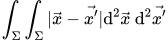
Comment calculer ça ? En fait, des mesures ont été faites de la surface d'une partie d'un métal,
plus précisément une topographie de l'état de surface d'une partie de 1cm par 1cm.
Cette mesure donnait alors une matrice dans laquelle chaque chiffre correspondait à une certaine
hauteur, un peu comme une carte avec des vallées et des montagnes.
Imaginons maintenant que nous prenions deux images de la topographie de deux métaux différents.
Ensuite, imaginons que l'on prenne une des images et qu'on la pose sur une table. Prenons ensuite
l'autre image, retournons là (pour que les pics pointent vers la table), et abaissons là sur l'image
posé sur la table.
On considère ici qu'il n'y a pas d'affaissement des montagnes, de déformations ou quoi que ce soit
mais que les images se traversent. Même si il s'agit d'une idée simplifié de la réalité, il donne
des résultats proches de la réalité.
Voici une image pour shématiser :
On crée une matrice à partir de ça. Chaque zone qui s'intersecte sera rempli de 1 et les zones où il
n'y a pas de contact seront remplies de 0.
A la fin nous avons une matrice rempli de 0 et de 1 où chaque zone où il y a des 1 représente des
zones où les contacts se font et chaque zone rempli de 0 répresente une zone où il n'y a pas de
contact. En fait c'est comme une photo en noir et blanc des contacts.
C'est dans cette matrice qu'il va falloir calculer cette somme, en pratique c'est une matrice 1000
par 1000.
Voici une matrice 8x8 qui pourrait ressemblait à cette matrice :
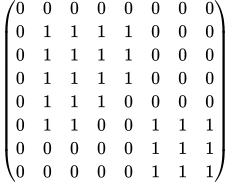
En fait le calcul reviendrait alors à calculer la somme ci dessous entre chaque 1 de la matrice.
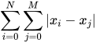
Explication du calcul et somme dans un carré
L'intégrale et le calcul de cette dernière peut s'expliquer de cette façon : On a une matrice de 0 et de 1. Imaginons que nous nous placions sur le premier élement où i=0 et j=0. Ensuite on calcule la distance entre l'élement où on se trouve et l'élément d'à côté(i=0 et j=1). On suppose que cette distance est de 1 et n'a pas d'unité on pourra le rajouter plus tard. On calcule la distance entre le premier élement et l'élement en i=0 et j=2. on l'ajoute à la distance précédente. On fait ça jusqu'à la fin de la ligne. Ensuite on passe à la deuxième ligne. Entre le tout premier élément et le premier élement de la deuxième ligne il y a une distance de 1 aussi. Par contre entre le tout premier élement et le deuxième élément de la deuxième ligne il y a une distance de 1.414 qui correspond à la racine de 2 (théorème de Pythagore). On finit le calcul de toutes ces distances de toute la matrice et. Tout ces calculs n'était que pour le premier élement. On passe ensuite à l'élément 2 et on refait tout le calcul dans toute la matrice. et ainsi de suite. Pour résumer :- On se place sur le premier élement (i=0, j=0)
- On calcule la distance entre lui et tout les autre élements de la matrice
- On somme toutes ces distances
- On se place sur le deuxième élement (i=0, j=1)
- On calcule la distance entre lui et tout les autre élements de la matrice
- On somme toutes ces distances
- Et ainsi de suite ..
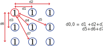
Le problème est alors la complexité du problème. En effet, Pour une matrice de taille N, on aura N*N
calcul pour le premier élement. Sauf qu'il y a N*N élement. On aura alors N^4 calcul à faire dans
cette matrice. Pour une matrice 1000x1000 il y aura alors 10^12 calculs.
La seule amélioration que j'ai pu trouvé est de pouvoir réduire par 2 le nombre de calculs en
utilisant des symétries et des astuces de calculs.
Solution naïve
Cette approche est l'approche de force brute, c'est la méthode la plus simple à comprendre et la plus directe. En effet, on fait une boucle sur tout les éléments, et à chaque boucle (i.e. chaque élément) on fait une somme de toutes les distances. Voici le code correspondant :
import numpy as np
import numba
N=1000
x=np.reshape(np.repeat(np.arange(0,N),N),(N,N))
x2=np.transpose(x)
B=np.sqrt(np.multiply(x,x)+np.multiply(x2,x2))
A=np.ones((N,N))
A[1][1]=0
@numba.jit
def calc(A):
Boucle=0
X_AXIS=np.shape(A)[0]
Y_AXIS=np.shape(A)[1]
b=0
for i in np.arange(X_AXIS):
for j in np.arange(Y_AXIS):
for k in np.arange(X_AXIS):
for l in np.arange(Y_AXIS):
if A[i][j]==0 or A[k][l]==0:
b
elif np.sqrt((i-k)**2+(j-l)**2)!=0:
b=b+np.sqrt((i-k)**2+(j-l)**2)
return b
Solution symétrique
Cette solution est plus compliquée à comprendre que la première. En effet, lorsqu'on regarde attentivement chaque étape du calcul, et en les mettant sur papier (pour ma part), on peut se rendre compte qu'il y a une redondance d'informations assez importante. Voici un shéma dans une matrice 2x2 pour comprendre où cette redondance a lieu :
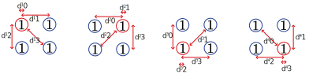
Dans le schéma précédent on peut voir les différentes étapes de la solution naïve en action dans une
matrice 2x2.
Admettons maintenant que l'on appelle la somme de la première étape D0, celle de la deuxième D1 et
ainsi de suite,
nous obtenons le système d'équation suivant :
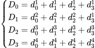
Si on observe le schéma, et qu'on le compare à ce système d'equation, on peut se rendre compte que
sur la somme D1, le calcul de la première distance se repète par rapport à la deuxième distance de
D0. Si on observe cela pour chaque élément, et qu'on remplace tous les termes qui se repete on
obtient la matrice suivante :
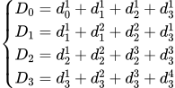
De plus, on peut voir avec le schéma que tous les termes diagonaux (si on considère ce système
d'équation comme une matrice) sont nuls. Si on ne considère pas la solution symétrique, il y a alors
16-4=12 valeurs à calculer.
Avec ce nouveau système on voit apparaitre une symétrie assez forte qui permet d'effectuer seulement
la moitié des calculs et de potentiellement réduire par 2 le temps de calcul.

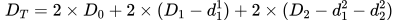
Cependant au lieu de les calculer et les soustraire, une solution est juste de les ommettre dans le
calcul en changeant les valeurs limites des boucles à chaque itération. Finalement, voici
l'algorithme correspondant :
@numba.jit
def calc2(A):
b=0
c=0
X_AXIS=np.shape(A)[0]
Y_AXIS=np.shape(A)[1]
for i in np.arange(X_AXIS):
for j in np.arange(Y_AXIS):
j2=j
if A[i][j]==0 :
pass
else:
for k in np.arange(i,X_AXIS):
for l in np.arange(j2,Y_AXIS):
if A[k][l]==0:
pass
elif np.sqrt((i-k)**2+(j-l)**2)!=0:
b=b+np.sqrt((i-k)**2+(j-l)**2)
j2=0
c=c+2*b
b=0
return c
Solution matricielle
La solution matricielle correspond à l'établissement et à la manipulation de ce que j'appelerai ici la matrice des distances : En effet, si on considère le système d'équation de la matrice 2x2 de la partie précédente, on peut alors écrire pour le premier élément la matrice suivante correspondant à chaque valeur des distances :
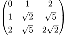
Un point important est que pour le premier élément, nous obtenons toutes les distances calculables
possibles.
En effet, comme on commence sur le premier élément (i.e. celui en haut à gauche) on obtient la plus
grande distance possible de tous les calculs avec l'élément en bas à droite.
L'idée d'utiliser des matrices est de ne calculer qu'une seule fois toutes ces distances. En effet,
le calcul de la racine carré de 2 est bien plus consommateur
en terme de mémoire et de calcul processeur (les racines sont basées sur des séries de Taylor)
qu'une simple manipulation de tableau.
Pour illustrer le propos et comprendre l'interet, voici quelque chose de plus visuel :
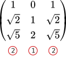
On peut ainsi voir qu'avec seulement deux colonnes de la matrice des distance pour le premier
élement on peut reconstruire la matrice des distance pour le deuxième élement, sans avoir à la
recalculer, juste en manipulant les colonnes.
En fait en partant de la première matrice on peut reconstruire toute les matrices des distances dont
nous avons besoin. Mais comment construire la calculer ?
En soit on pourrait juste la calculer avec un calcul direct, et la stocker dans une matrice, mais
une solution plus élegante est possible.
Pour cela, on crée une matrice de même taille que la matrice de base (admettons alors une matrice
3x3 et appelons la X). On remplit la première ligne que de 0, la deuxième ligne que de 1 et la
troisième que de 2. on met ensuite tous ses élements au carré. On crée une matrice X' qui est alors
la transposée de cette dernière.
Ensuite on somme terme à terme les élements des deux matrices et enfin on applique une racine carrée
à tout les élements. On obtient alors la matrice désirée :
N=1000
x=np.reshape(np.repeat(np.arange(0,N),N),(N,N))
x2=np.transpose(x)
B=np.sqrt(np.multiply(x,x)+np.multiply(x2,x2))
Après beaucoup de recherches empiriques, j'ai pu trouver une formule qui relie les variables des
boucles avec la création de la matrice pour n'importe quel élément.
La voici (avec C la nouvelle matrice) :
C=B[abs(i-k)][abs(j-l)]
@numba.jit
def calc3(A):
c=0
X_AXIS=np.shape(A)[0]
Y_AXIS=np.shape(A)[1]
for i in np.arange(X_AXIS):
for j in np.arange(Y_AXIS):
for k in np.arange(X_AXIS):
for l in np.arange(Y_AXIS):
if A[i][j]==0 or A[k][l]==0:
pass
else:
c=c+B[abs(i-k)][abs(j-l)]
return c
Solution Matricielle bis
Enfin, la dernière solution est très semblable à la solution matricielle, à l'exception près que dans ce calcul on ne teste plus à chaque fois si un élement est nul pour sommer ou non une valeur, et de plus on crée une nouvelle matrice. En effet, ici on va créer la nouvelle matrice pour chaque élément (avec la formule de la méthode matricielle). Ensuite on va appliquer un produit scalaire entre la matrice principal et la matrice des distances à chaque itération. Comme la matrice principale n'est composée que de 1 ou de 0, cela revient à faire la somme de tout les élements de la matrice des distances que lorsqu'il y a un 1. Voici le code correspondant :
@numba.jit
def calc4(A):
B1=np.zeros(np.shape(A))
c=0
X_AXIS=np.shape(A)[0]
Y_AXIS=np.shape(A)[1]
for i in np.arange(X_AXIS):
print(i)
print('%')
for j in np.arange(Y_AXIS):
if A[i][j]==0:
pass
else:
for k in np.arange(X_AXIS):
for l in np.arange(Y_AXIS):
if A[i][j]==0:
break
else:
B1[k][l]=B[abs(i-k)][abs(j-l)]
c=c+np.sum(np.multiply(B1,A))
return c
Résultats
Après avoir élaborer ces résultats il faut pouvoir faire un test de rapidité, voici le code :
N=20
calc_time=[]
calc2_time=[]
calc3_time=[]
calc4_time=[]
size_matrix=[]
#Sert à initialiser numba pour ne pas fausser les résultats.
A=np.ones((N,N))
sum_calc=calc(A)
sum_calc2=calc2(A)
sum_calc3=calc3(A)
sum_calc4=calc4(A)
for N in range(0,100,10):
size_matrix.append(N)
A=np.ones((N,N))
start=time.time()
sum_calc=calc(A)
stop=time.time()
calc_time.append(stop-start)
start=time.time()
sum_calc2=calc2(A)
stop=time.time()
calc2_time.append(stop-start)
start=time.time()
sum_calc3=calc3(A)
stop=time.time()
calc3_time.append(stop-start)
start=time.time()
sum_calc4=calc4(A)
stop=time.time()
calc4_time.append(stop-start)
Il suffit alors de tracer les résultats avec Matplotlib :
import matplotlib.pyplot as plt
plt.figure(figsize=(10,5))
plt.plot(size_matrix,calc_time,'o',label='Calcul direct')
plt.plot(size_matrix,calc2_time,'x',label='Calcul symétrique')
plt.plot(size_matrix,calc3_time,'*',label='Calcul matriciel')
plt.plot(size_matrix,calc4_time,'+',label='Calcul matriciel Bis')
plt.title("Execution avec Numba (Compilateur JIT) pour une matrice NxN",fontsize=14)
plt.xlabel('N',fontsize=12)
plt.ylabel('Temps (s)',fontsize=12)
plt.legend(fontsize=12)
plt.show()
Deux test ont été effectué. Le premier est en utilisant Numba. Numba est un module python qui permet
de compiler à la volée un code écrit avec Numpy, ce qui est le cas ici.De ce fait la rapidité de
calcul est grandement accélérée.
Le deuxième test est un test sans ce module.
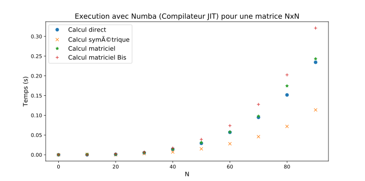
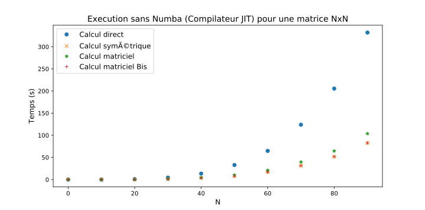
Ces test montrent que, tout d'abord l'utilisation de Numba s'avère nécéssaire (Tests environ 1000
fois plus rapide dans cette gamme de calculs).
Avec ce module, comme dans le cas sans module, c'est la solution symétrique qui est la plus rapide.
De plus on peut se rendre compte qu'utiliser Numba dans le cas de matrice n'est pas le plus optimal
car il devient même plus long que la solution directe.
Cependant, sans Numba, on peut se rendre compte que la solution symétrique et la solution
matricielle Bis donnent des résultats similaires en terme de rapidité. Ainsi, si on souhaite recoder
ce programme en c++ par exemple, il faudra privilégier la réécriture de la solution symétrique et
matricielle Bis.